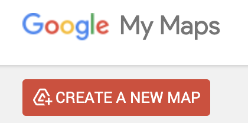

Group 5 [Creating Coordinates]
⚠️ Requirements
At least one group member will need to be logged into their Google account to complete this activity.
The group member logged in should be ready by the end to share their screen on the class projector and lead a group discussion about their Google Sheets table and Google My Maps map.
Objectives
- Learn where to find coordinate information for locations
- Learn how to format coordinates in a table so they can be opened in a map
- Learn how to import a table of coordinates into a GIS mapping interface
10 minutes to get started
Imagine you want to make a map of all the places referenced in Chekhov’s plays. Where would you get that data? In many cases, you may need to assemble location data yourself into a spreadsheet. This is just one example of the type of project where creating a spreadsheet of coordinates may be necessary. For this activity, you can choose to create data points from any location of your choice.
- Create a new Google Sheets by typing
sheets.newinto a browser.
- Create three header columns,
name,latitude, andlongitude.
- In a new tab, navigate to Google Maps .
- Find a location you are interested in mapping.
- In your spreadsheet, under the
namecolumn, give the location a name.
Right clickon the map in Google maps in the area you are interested in. A window with coordinates should pop up. Click on the coordinates, and they will copy to your clipboard.
- Paste the value into the spreadsheet, under the
latitudecolumn.
- You will need to edit the values so that the first number in the set of coordinates is under the
latitudecolumn, and the second number is inlongitudecolumn. Make sure to include the negative-symbol, if it exists, and remove the separating comma.

Properly formatted table.
- Repeat this process and add two more points, so you have three altogether.
- When you are finished entering your data, name your spreadsheet, and export it to a
.csvformat by clickingFile→Download→Comma Separated Values (.csv).
- In a search engine, search for
Google My Maps.
- From Google My Maps, choose
CREATE A NEW MAP.

- Next to
Untitled Layer, select the three dots (Layer options), and chooseImport.
- Choose
Browseand upload the.csvyou exported from Google Sheets.
- Make sure all columns are checked off, and choose
Continue.
- Under
Choose a column to title your markers, selectname. ChooseFinish.
Follow-up resources (next steps)
- Add a Spreadsheet .XLSX or .CSV to a QGIS project
- Follow an ArcGIS Pro geocoding tutorial
by clicking
Your ArcGIS Organization's URL, typing inharvard-cga, and authenticating with your Harvard Key - Here’s a blog post about how to extend records you have in a spreadsheet by “reconciling” them with matches in Wikidata, using a tool called OpenRefine. One of the data points you can pull into your spreadsheet are coordinates
Discussion questions
- Why might someone need to create location data of their own?
- How does importing the data into Google MyMaps exemplify what you can do with tabular coordinate data? What do the Google MyMaps activity and the follow-up resource, Add a Spreadsheet .XLSX or .CSV to a QGIS project have in common?
- Prepare to present any demos which could help communicate these takeaways.
- Did you find anything else suprising or interesting in the follow-up resources?